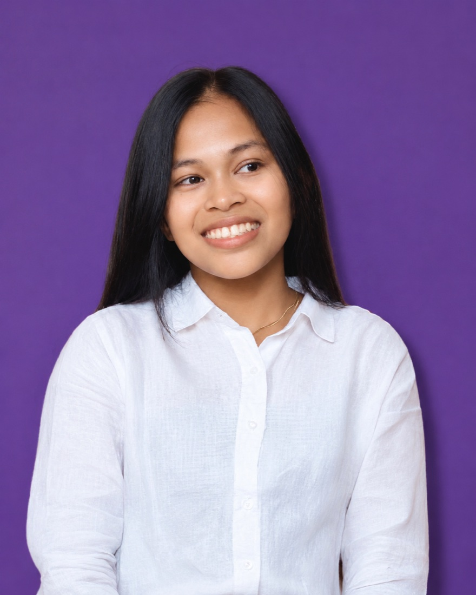

Designer, video editor & virtual assistant
Hi, I’m
Charlene.
I make graphics, edit videos, and help teams keep their projects in order. This is a collection of the work I do.

A few of the hats I wear
The portfolio
Selected work
A mix of design, video, and content.
Open a project to see the details.
Have something similar in mind? Let’s make it yours
A little about me
Creative work, with
an organized approach.
View my résumé
My work moves between design, video editing, and the details that keep a team running. I enjoy making things look right, but I’m just as comfortable organizing files, following up on deadlines, and reviewing deliverables.
I work remotely with teams and clients, pick up new platforms quickly, and take ownership of the tasks I’m given.
- Coordinating workflows, deadlines, and deliverables
- Managing scheduling, email, client communication, and files
- Maintaining consistent output quality
- Collaborating with remote teams
- Producing design and video content
- Learning new platforms and taking ownership
Services I offer
Working together
What can I
take off your list?
Choose a service to see what’s included.
01Design & contentFor the things your audience sees.
Social graphics, carousels, thumbnails, and presentation layouts that keep your content visually consistent.
- Social graphics & posters
- Thumbnails & newsletters
- Pitch decks & documents
02Video & podcastsFrom short clips to full conversations.
Short-form and long-form video editing for social media, marketing, and podcasts.
- Social reels & ads
- Podcast video edits
- Content refinement & consistency
03Coordination & supportFor everything behind the scenes.
Project coordination, virtual executive assistance, and team supervision to keep the everyday work moving.
- Scheduling, email & client communication
- Deadline tracking & team follow-ups
- File organization & quality checks
Behind the work
Tools & workflow
Different tasks, a familiar toolkit.
Choose a step to take a closer look.
A clear place to start.
Organizing tasks, keeping track of deadlines, and making the next step easy to find.
- Monday.comProject boards
- NotionNotes & documentation
- ClickUpTasks & deadlines
A little structure makes room for the creative work.
Where the work takes shape.
Designing graphics, cutting video, and bringing podcast conversations together.
- CanvaLayouts & graphics
- PhotoshopImage editing
- CapCutVideo editing
- DescriptAudio & video edits
- RiversidePodcast workflow
The format changes. The attention to detail stays.
A starting point to build on.
Exploring ideas, organizing information, and refining drafts with AI assistance.
- ChatGPTIdeas & drafting
- ClaudeWriting & refinement
Helpful tools, with a human eye on the result.
In their words
What clients &
teammates say
A few messages from design and video projects.
Open a card to read the original feedback.
Along the way
Experience
Supervisor
ATWT Virtual Solutions
- Oversaw team workflows and output quality across design and video projects.
- Coordinated team members and clients, providing guidance and feedback.
- Followed up on work in progress to maintain schedules and standards.
Graphic and Video Editor
ATWT Virtual Solutions
- Produced short-form and long-form video edits and graphics for client marketing and social media.
- Collaborated remotely to deliver consistent content under tight turnaround times.
Learning Facilitator (Tutor)
- Managed scheduling, lesson preparation, and communication with students and parents.
- Organized learning materials and tracked student progress.
Graphic Designer (Print and Digital)
- Created posters, ebooks, newsletters, social media graphics, logos, and visual identities.
Education
Bachelor of Elementary Education
City of Malabon University · 2022–2026
- Ninoy Aquino Senior High School General Academic Strand (GAS), 2020–2022
- Tañong National High School 2016–2020
- Tañong Elementary School Unit 1 2010–2016
Learning along the way
Certificates
Training and learning milestones.
Take a closer look at the documents.
Let’s talk
What are you
working on?
Tell me what you need, where things stand, and what you have in mind. A rough idea is a good place to start.
chaaa.creatives@gmail.com